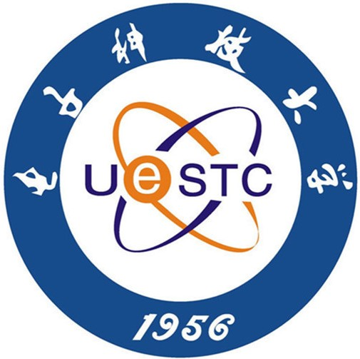

Biography
Hello! I am a second-year MSc student at  University of Electronic Science and Technology of China (UESTC). I conduct research at Laboratory of Intelligent Collaborative Computing, under the supervision of Prof. Jie Lin.
My primary research interests include deep learning and AGI, mainly focusing on LLM.
Research Area
- LLM and LLM-based Agent (e.g., Transformers with memory)
- Deep Learning and its Applications (e.g., Medical Images)
Publications
-
A Framework for Inference Inspired by Human Memory Mechanisms.
Xiangyu Zeng, Jie Lin*, Piao Hu, Ruizheng Huang, Zhicheng Zhang
International Conference on Learning Representations (ICLR), 2024.
-
SDMTR: A Brain-inspired Transformer for Relation Inference.
Xiangyu Zeng, Jie Lin*, Piao Hu, Zhihao Li, Tianxi Huang
Artificial Intelligence and Statistics (AISTATS), 2024.
-
Intelligent Inspection Guidance of Urethral Endoscopy Based on SLAM with Blood Vessel Attentional Features.
Jie Lin*, Xiangyu Zeng, Yulong Pan, Shangqing Ren, Yige Bao
Cognitive Computation, 2024.
-
Time Series Classification Based on Multi-Dimensional Feature Fusion.
Shuo Quan, Mengyu Sun*, Xiangyu Zeng, Xuliang Wang, Zeya Zhu
IEEE Access, 2023.
Honors and Awards
Internship Experience
- 06.2022-12.2022: China Telecom Research Institute, Beijing, China